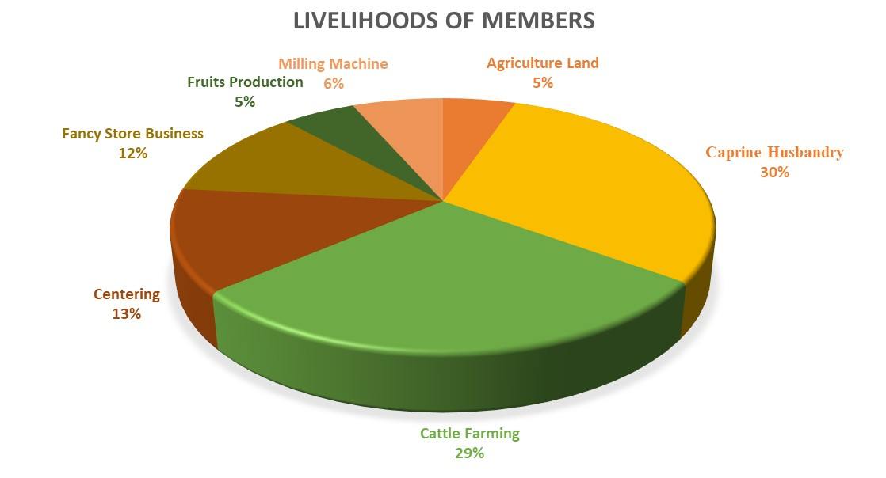

One of key factors to enable PWDs achieve self-reliance is to help them achieve economic independence. They are considered to be a liability, especially in poor families, because of their dependence on others which mainly results in their ill-treatment. Having an income source makes their self-confident and autonomous.
Facilitating mini-banks in the sanghams which PWDs can access for loans to venture into a business or any income generating activity
Training workshops for men in trades like plumbing, carpentry, masonry, and electrician works.
Mini Bank Programme:
Each and every village consists of the self-help groups comprising of 8 or more members in the group at village level.
In the Atmakuru Mandal, there are 34 self-help groups with 650 memberships.
Every month, they have meeting at once on 11th day and review the issues and problems.
Every member in the self-help group deposits Rs.100 each month as a contribution and deposit the sum amount in the bank every month.
There will be 2 leaders for each mandal samakya and 2 bank operation signatories.
They save the money to cover the uncertain emergencies and miscellaneous expenses in the village.
The amount will be deposited monthly in the bank to keep it safe and secure.
 >
The above table displays the information about the members in the mandal samakya group getting the loan sanctioned in the form of DSDF for the purpose of the employment for the sake of the livelihood in the society.
The graphical representation above illustrates a predominant trend within the Mandal Samakya, wherein a significant majority of members have availed benefits from the Rural Development Trust (RDT) in the form of loan sanctions. Notably, 30% of members utilized the financial support for Caprine Husbandry, followed closely by 29% engaging in cattle farming, indicating the prevalent utilization patterns among the Mandal Samakya members.